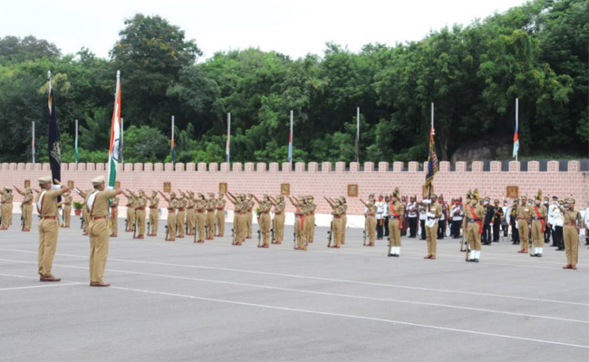

Bureau of Police Research and Development
Achievements of BPRD

Creating record in the sixty one years old glorious history of National Defence Academy (NDA), young and dynamic Cadet Captain Avinash Chhetry, son of Sh. P. B. Chhetry, Assistant Director, BPR&D emerged as first from Assam to receive the President's Gold Medal (PMG) for being the 'Best Cadet' and standing First in overall order of merit in 130th course of the NDA. Sh. Avinash also own 'Gold Medal' for 'Best All Rounder Army Cadet' and 'Silver Medal' in outdoor training. He commanded the passing out parade of 1 30th course with total 312 cadets including 42 cadets from friendly countries like Afghanistan, Bhutan, Kyrgyzstan, Tajikistan, Papua New Guinea, Sudan, and Tonga who passed out from NDA at Maharashtra on 31' May, 2016.
He continued to display his extraordinary performance in the 1MA (Indian Military Academy), Dehradun also. This year (2017) he was awarded the 'Sword of Honour' and 'Gold Medal' on being adjudged the 'Best Cadet' by Gen. Vipin Rawat, Chief of Indian Army. He enjoyed the privilege of commanding the passing out parade consist of 490 gentlemen cadets including 56 from foreign friendly countries who passed out form IMA on 10' June, 2017. He earned the distinction of being the first from Assam to be awarded the 'Sword of Honour' and the 'Gold Medal' in the IMA. He is the alumni of RIMC (Rashtriya Indian Military College), Dehradun.